运动捕捉系统GLMocap使用说明
Warning
本使用说明目前仅支持4相机套件，同时由于精力有限诸多功能和隐患无法顾及，敬请见谅。
四相机套件使用教程
Note
不同版本套件使用会有所出入，教程会尽量顾及不同版本差异。
概览说明
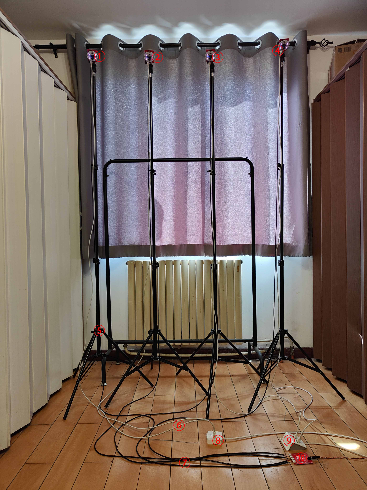
| 序号 | 说明 | 套件是否包含(不含则需自备) |
|---|---|---|
| ① | 相机1(软件设置中为相机0) | 是 |
| ② | 相机2(软件设置中为相机1) | 是 |
| ③ | 相机3(软件设置中为相机2) | 是 |
| ④ | 相机4(软件设置中为相机3) | 是 |
| ⑤ | 相机架(x4) | 否 |
| ⑥ | 3长Typec USB2.0数据线(x4) | 否 |
| ⑦ | 同步电源线(x4) | 否 |
| ⑧ | USB HUB | 否 |
| ⑨ | USB HUB | 否 |
| ⑩ | 同步电源板 | 是 |
相机接口说明
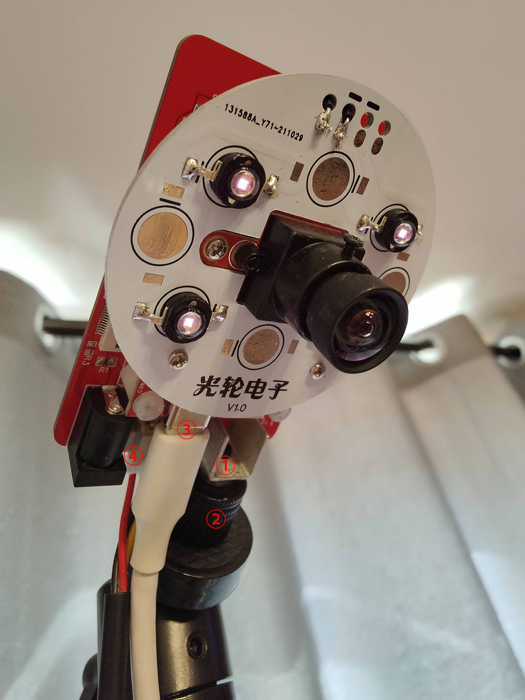
| 序号 | 说明 | 套件是否包含(不含则需自备) |
|---|---|---|
| ① | M4固定座 | 是 |
| ② | 转接头，M4公转¼母 | 否 |
| ③ | Typec USB接口 | 是 |
| ④ | XH2.54 3P同步电源接口 | 是 |
同步电源板接口说明
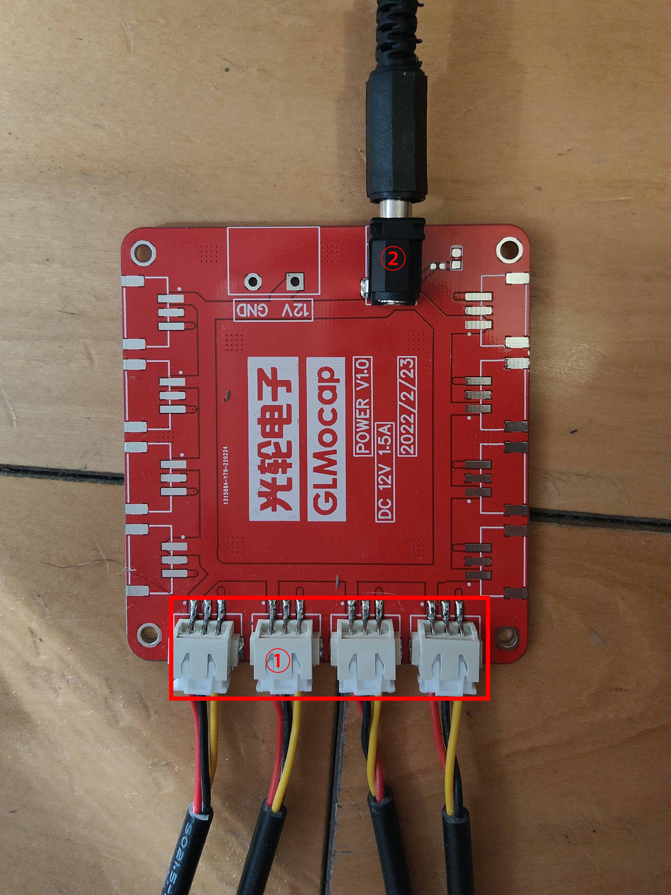
| 序号 | 说明 | 套件是否包含(不含则需自备) |
|---|---|---|
| ① | XH2.54 3P同步电源接口(不分循序) | 是 |
| ② | 12V 1.5A直流电源输入接口(插头5.5mm) | 是 |
GLMocap软件界面说明
主界面
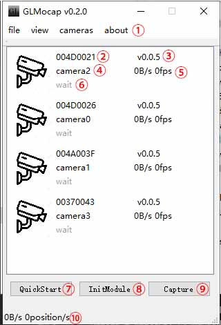
| 序号 | 名称 | 说明 |
|---|---|---|
| ① | 菜单栏 | 文件，窗口，相机，关于 |
| ② | 相机ID | 短ID，用于区分设备 |
| ③ | 相机固件版本 | 固件版本 |
| ④ | 相机序号 | 从camera0开始排序，目前只支持四相机，所以序号为0-3 |
| ⑤ | 相机实时传输速度 | 单相机USB传输速度、图像帧率 |
| ⑥ | 相机状态 | 显示每个相机的状态 |
| ⑦ | 快速开始 | 用于快速打开四个相机窗口，并启动数据传输 |
| ⑧ | 初始化模型 | 用于快速重新识别绑定用于无人机的三个红外marks |
| ⑨ | 图像捕捉 | 捕捉四个摄像头的图像，每0.5s捕捉一次，用于摄像头标定和图像分析 |
| ⑩ | 全部相机的实时传输速度 | 全部相机USB传输速度、定位速度 |
菜单栏-文件（file）
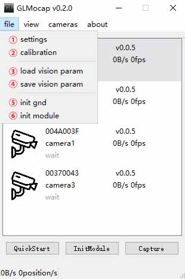
| 序号 | 名称 | 说明 |
|---|---|---|
| ① | 位置窗口 | 显示无人机定位的位置和姿态（单位mm） |
| ② | 3D窗口 | 模拟现实3D空间中摄像头及红外marks位置 |
| ③ | 日志窗口 | 显示程序运行日志 |
| ④ | PX4飞控控制窗口 | 进行PX4飞控控制 |
| ⑤ | 虚拟设备窗口 | 离线测试运行及识别验算算法时使用 |
菜单栏-窗口（view）
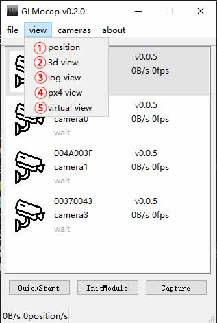
| 序号 | 名称 | 说明 |
|---|---|---|
| ① | 设置 | 设置相机数量，图像阈值，图像存储路径等 |
| ② | 标定 | 标定摄像头 |
| ③ | 加载视觉参数文件 | 加载视觉参数文件，ini后缀，默认文件名为vision.ini |
| ④ | 存储当前视觉参数到文件 | 存储当前视觉的参数到文件，ini后缀，默认文件名为vision.ini |
| ⑤ | 初始化大地 | 使用大地标定板标定"地" |
| ⑥ | 初始化模型 | 初始化识别模型 |
菜单栏-相机（cameras）
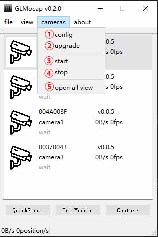
| 序号 | 名称 | 说明 |
|---|---|---|
| ① | 全部相机设置 | 一键打开全部相机设置界面 |
| ② | 全部相机升级 | 一键打开全部相机升级界面 |
| ③ | 全部相机开始传输图像 | 一键打开全部相机开始传输图像界面 |
| ④ | 全部相机停止传输图像 | 一键打开全部相机停止传输图像界面 |
| ⑤ | 打开全部相机窗口 | 一键打开全部相机窗口 |
相机右击菜单
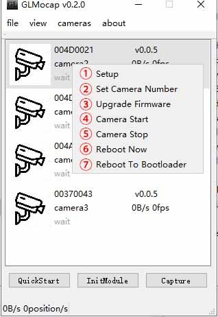
| 序号 | 名称 | 说明 |
|---|---|---|
| ① | 相机设置 | 打开全部相机设置界面 |
| ② | 设置相机序号 | 从0号开始 |
| ③ | 升级相机固件 | 选择固件开始升级 |
| ④ | 开始相机传输 | 开始相机图像传输 |
| ⑤ | 停止相机传输 | 停止相机图像传输 |
| ⑥ | 重启相机 | 相机重启 |
| ⑦ | 重启相机至bootloader | 重启相机至bootloader |
其他界面
-
相机图像界面
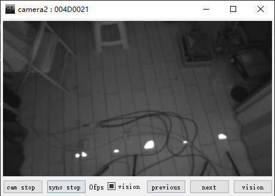 -
软件配置界面
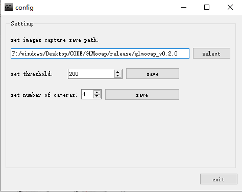 -
标定界面
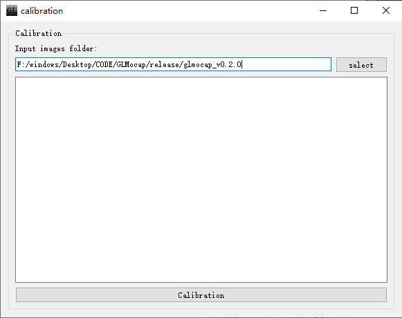 -
定位姿态界面
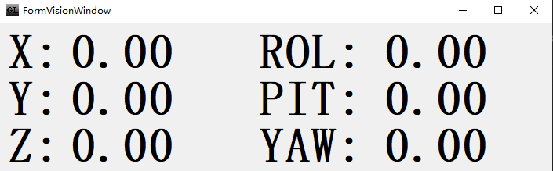 -
3D界面
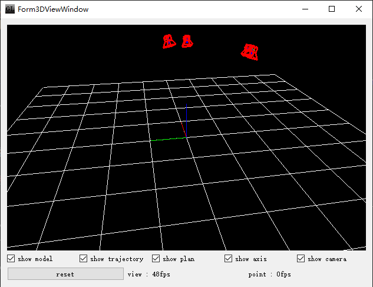 -
Log界面
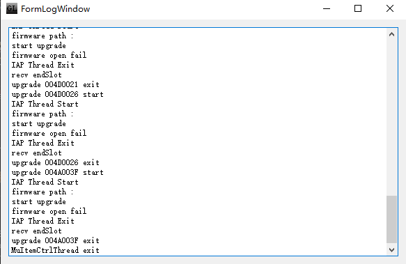 -
PX4控制界面
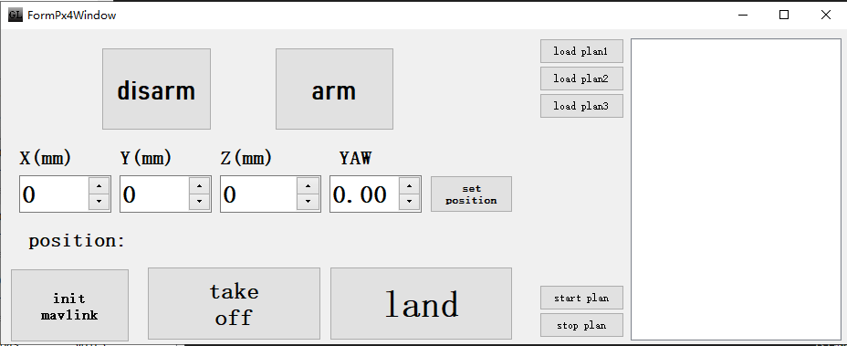 -
虚拟界面
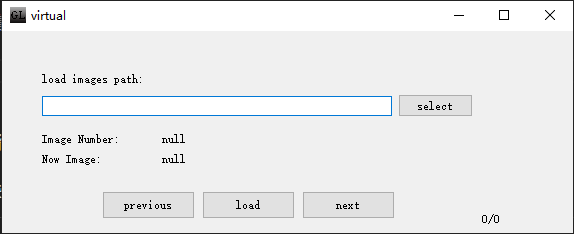 -
相机配置界面
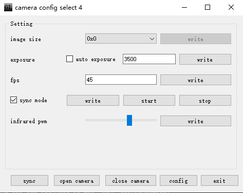
使用说明
1.安装
- 请移步下载最新GLMocap软件 https://github.com/guanglun/GLMocap/releases，首次使用请下载包含库的打包文件。
- 请按照上图所示进行四相机的安装及固定，四个相机中的其中一个（仅一个，且一般是第一个编号为0的相机）需要短接同步接口。
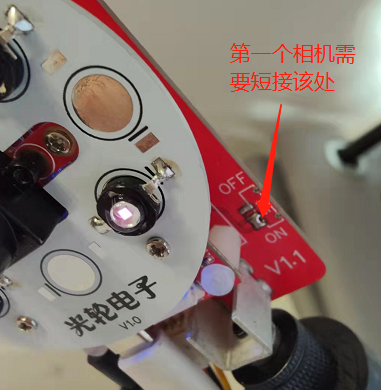 - 由于尚在测试开发阶段，所以首先请使用较小的公共视野范围进行测试，推荐按照上图所示的空间进行测试，大概2x2x2m空间。
- USB2.0数据线使用质量好一些的线，为了保证USB接口数据吞吐量足够，请合理分配USB接口。
Warning
请按照四相机推荐位置摆放相机，使其同向且有公共视野。
Warning
如果四个USB都插到一个HUB上进行图像传输可能会数据量过大导致无法使用！
- 运行GLMocap的电脑请使用性能高些的电脑。
2.设置相机序号
推荐序号顺序如下： 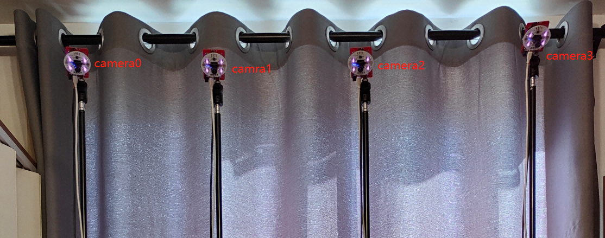
- USB数据线全部断开，插入第一个摄像头（上图最左面），软件主界面会出现一个摄像头，右击设置相机序号为0，设置完毕后相机会出现camera0的说明字样。
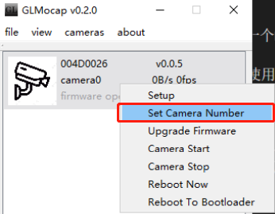 - 拔出设置好的第一个摄像头，插入第二个摄像头（左数第二个），主界面软件主界面会出现一个摄像头，右击设置相机序号为1，设置完毕后相机会出现camera1的说明字样。
- 后面2个摄像头以此类推，就会将四个摄像头序号设置完毕。
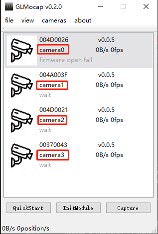
3.校准
- 点击主界面左下角的
QuickStart快速打开四个摄像头。
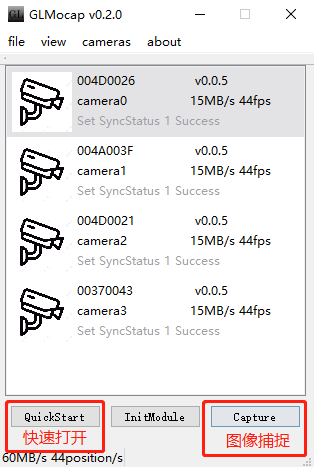 - 相机工作正常情况下如下所示： 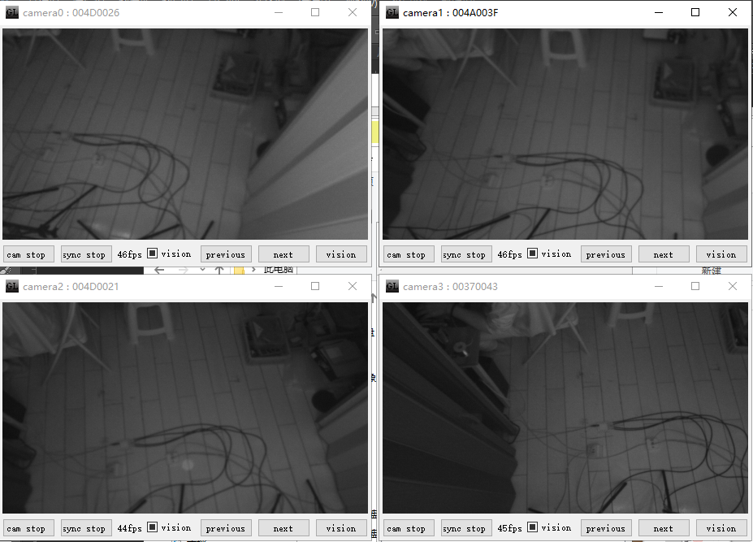
- 拿出准备好的校准棋盘(A4纸打印，棋盘文件)，放在四个摄像头公共视野下面。
- 点击主界面右下角
Capture按键，开始捕捉。捕捉开始后默认会在可执行文件目录创建以时间命名的文件夹用来保存四个摄像头捕捉的画面，比如2022-03-06-13-27-37-678。 - 在各个方向（保证四个摄像头都能看到）移动棋盘，待捕捉充分后点击右下角
Capture（已经变成了stop）按键，结束捕捉。

- 打开
calibration（标定）界面，选择刚刚捕捉的图片文件夹2022-03-06-13-27-37-678，然后点击下面的Calibration按键开始标定摄像头。 - 标定完成后会打印误差数据，可以查阅参考。 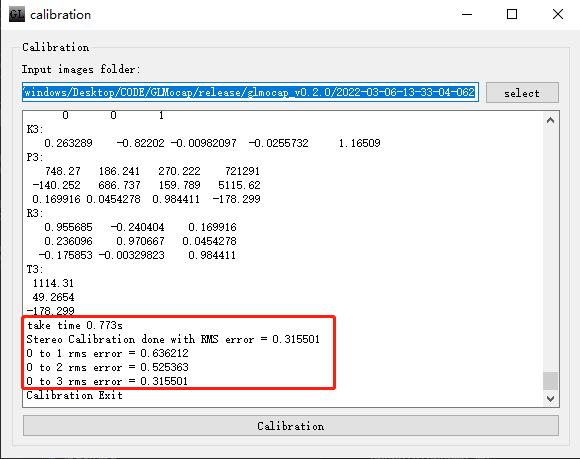
- 此时需要将标定完的数据保存到文件，默认文件在可执行文件的所属文件夹下，名称为vision.ini。
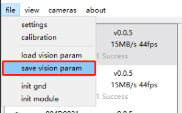 - 保存校准文件以后，需要校准地面。使用三个红外mark制作地面标定板并放置在地面。 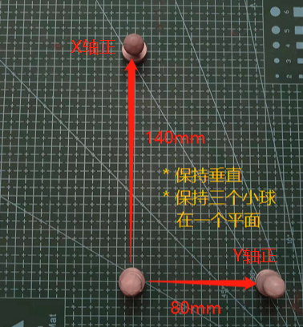
- 点击地面校准按键。
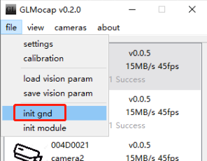
Warning
务必确保四个相机的视野内只有标定板上的3个红外marks，否则误识别会曹成无法标定。如果光线问题请调试相机阈值
Note
点击相机图像界面的vision界面可以切换显示效果
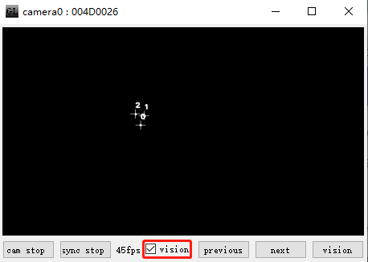
- 校准地面完毕后可以打开3D界面看到摄像头的排布：
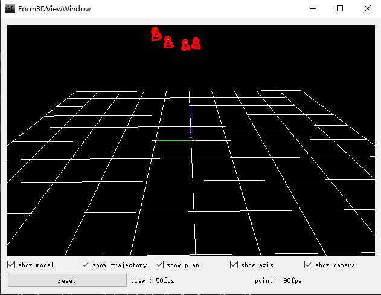 - 到这里校准完成。
Warning
务必确保四个相机的视野内只有模型上的3个红外marks，否则误识别会曹成无法标定。
- 此时移动模型（在公共视野内）可以看到3D界面中3个mnark在伴随移动。 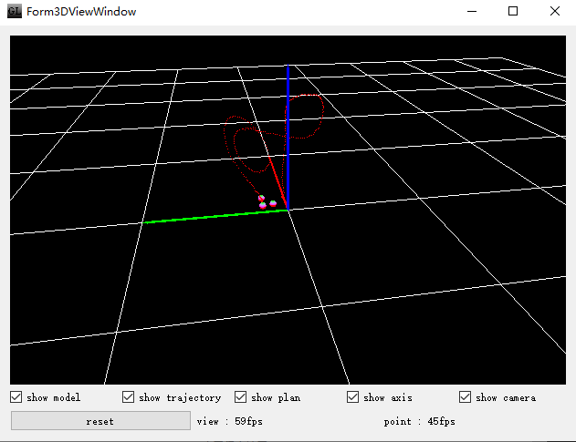